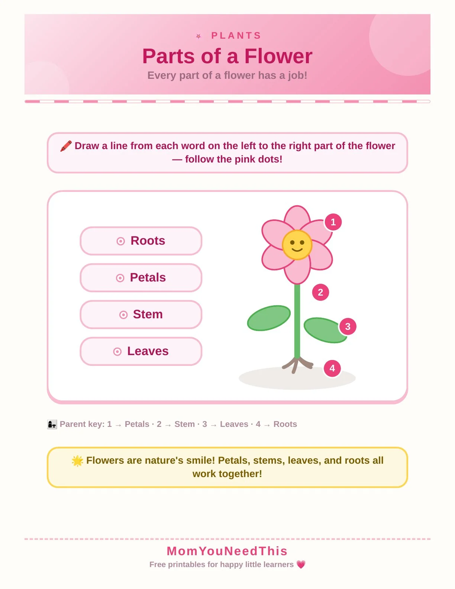

🌸🌼 Flowers Activities Bloom Into Learning
Petals, colors and sweet smells — flowers are nature's confetti. These cheerful activities help little learners explore flower parts, colors and the pollinators who love them.
Quick Answer
This free printable flowers activity helps toddlers and preschoolers (ages 2–5) learn a flower's parts — petal, stem, leaf and root — and the flower's real job: making seeds, with the help of bees and butterflies who carry pollen from bloom to bloom. Kids label flower parts, match flowers by color, and discover how a flower becomes a fruit or a seed head. Download and print at home with no signup needed.
At a Glance
- Ages: Toddlers and preschoolers (ages 2–5)
- Activity: Labeling flower parts; how bees help flowers grow
- Skills: Plant science and flower parts
- Format: Printable worksheet (PDF)
- Cost: Free, no signup
Flowers are the friendliest possible botany lesson: bright, scented, and built from a handful of parts a child can name and count. And unlike most “pretty” topics, flowers have a plot — they exist to be visited by insects, and the visit is what makes seeds, fruit, and next year's flowers happen.
🌸🌼 Explore Flowers Activities
Label flower parts, match flowers by color, and discover how bees and butterflies help flowers grow.
💡 How To Use This Activity
Print the flower pages and keep a real flower nearby if you can — a garden bloom or a grocery-store stem. Count the petals on both, name the parts as you colour, and hold the finished page up beside the real flower to compare colours. The print button opens the full-size page in a new tab if you prefer to print from there.

🖨️ Download Your Free Flowers Activities Printable
Label flower parts, match flowers by color, and discover how bees and butterflies help flowers grow. Print it out, grab the crayons, and you're ready — no signup needed.
⬇️ Download Free Printable 🖨️ Print🎁 Free printable for toddlers & preschoolers
🌸 Inside A Flower — Parts And Their Jobs
Petals are the flower's advertisement: bright colors and patterns that say “nectar here” to bees and butterflies. Some petals even carry stripes that work like runway lights, guiding insects in.
The center is the workshop. It holds the pollen — a yellow dust — and the tiny beginnings of seeds. When a bee brushes against one flower and then another, pollen rides along on its fuzzy body, and that delivery is what lets the second flower make seeds. The word for the delivery is pollination.
The stem is a straw and a stand in one: it holds the flower up toward the light and the bees, and carries water up from the roots. Leaves are the kitchens, catching sunlight to make the plant's food. Roots drink from the soil and anchor the whole operation.
After pollination, the flower's work changes: petals fall, and the center swells into a fruit or a seed head — an apple, a strawberry, a dandelion clock. Every fruit your child has ever eaten began as a flower, which makes the grocery store a flower museum in disguise.
❓ Flowers Activities FAQs
What activities are included in Flowers Activities?
This page collects our free flowers printables in one place: labeling flower parts (petal, stem, leaf, root), matching flowers by color, and discovering how bees and butterflies help flowers make seeds. Download the printable below and start learning right away.
Are these activities really free?
Yes — every printable on MomYouNeedThis is 100% free to download and print. No signup, no payment, just tap the download button. If a real flower is in the house, this is the worksheet set it deserves to meet. If a real flower is in the house, this is the worksheet set it deserves to meet.
How do I use these activities with my child?
Keep a real flower nearby if you can — a garden bloom or a grocery-store stem. Count the petals on the real flower and the printed ones, name the parts as you color, and hold the finished page beside the real thing to compare colors. If a bee visits a flower outside this week, watch together: your child now knows what the bee is actually doing.